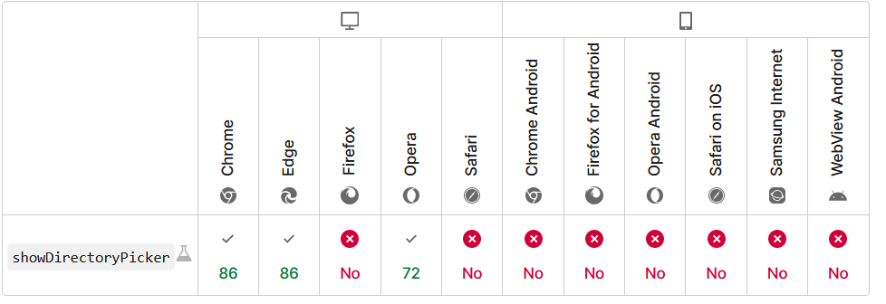

浏览器页面实现读取和存储文件到c盘，是否能实现

vue 浏览器页面实现读取c盘判断是否有制定文件目录，如果没有就创建，有就把从后端请求的视频地址下载到制定目录里，是否能实现？
你的思路是错误的，在用户没有授权的情况下无法实现。
在延续该思路的情况下可以在 chrmoe 下有限的实现。
可以先通过 Window：showDirectoryPicker() 方法 获取对本地磁盘目录的引用，然后按照你的思路即可。

但这种方法兼容性不好。
仅仅需要本地缓存的情况可以略微改变思路
事实上 showDirectoryPicker 是返回了一个 FileSystemDirectoryHandle ，我们还可以通过 Web/API/StorageManager/getDirectory 来获取 FileSystemDirectoryHandle 对象，与前者的区别是，这种方式更类似于安卓12以后的应用存储，仅对该网站可见，用户在很难磁盘上阅读。
兼容性还可以。缺点是他是不可靠的，当磁盘空间不够时通过该接口存储的数据可能被浏览器删除。